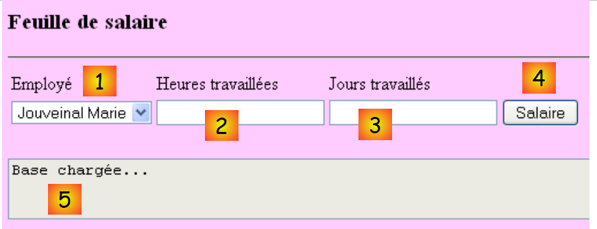

4. Die Anwendung [SimuPaie] – „ “, Version 1 – ASP.NET
4.1. Introduction
Wir möchten eine Anwendung mit dem Namen .NET entwickeln, mit der ein Benutzer Simulationsberechnungen zur Gehaltsabrechnung der Tagesmütter des Vereins „Maison de la petite enfance“ einer Gemeinde durchführen kann.
Das Formular ASP.NET zur Gehaltsberechnung unter sieht wie folgt aus:
 |
Die Anwendung ASP.NET wird folgende Architektur aufweisen:
 |
- Bei der ersten Anfrage an die Anwendung wird ein Objekt vom Typ [Global] instanziiert, das vom Typ [System.Web.HttpApplication] abgeleitet ist. Dieses Objekt wertet die Konfigurationsdatei [web.config] der Webanwendung aus und speichert bestimmte Daten aus der Datenbank im Cache (Vorgang 0 oben).
- Bei der ersten Anfrage (Schritt 1) an die Seite [Default.aspx], die die einzige Seite der Anwendung ist, wird das Ereignis [Load] verarbeitet. Dort wird das Befüllen des Mitarbeiter-Kombinationsfelds abgewickelt. Die für das Kombinationsfeld erforderlichen Daten werden vom Objekt [Global] angefordert, das diese zwischengespeichert hat. Dies ist der oben genannte Vorgang 2. Der Vorgang 4 sendet die so initialisierte Seite an den Benutzer.
- Bei der Anforderung der Gehaltsberechnung (Vorgang 1) auf der Seite [Default.aspx] wird das Ereignis [Load] erneut verarbeitet. Es wird nichts unternommen, da es sich um eine Anfrage vom Typ POST handelt und der Handler [Pam_Load] so programmiert wurde, dass er in diesem Fall nichts unternimmt (Verwendung des Booleschen Werts IsPostBack). Nachdem das Ereignis [Load] verarbeitet wurde, folgt das Ereignis [Click] auf der Schaltfläche [Salaire]. Dieses benötigt Daten, die in [Global] nicht zwischengespeichert wurden. Daher fordert der Ereignis-Handler diese von der Datenbank an. Dies ist der oben genannte Vorgang 3. Anschließend wird das Gehalt berechnet, und Vorgang 4 sendet die Ergebnisse an den Benutzer.
4.2. Das Visual Web Developer 2008-Projekt
 |
- in [1] wird ein neues Projekt
- in [2], vom Typ [Web / Application Web ASP.NET]
- in [3], benennen das Projekt
- In [4] wird der Name und in [5] der Speicherort festgelegt. Für das Projekt wird ein Ordner mit dem Namen [c:\temp\pam-aspnet\pam-v1-adonet] erstellt.
 |
- In [5] wird das Visual Web Developer-Projekt
- in [6], die Projekteigenschaften (Rechtsklick auf das Projekt / Eigenschaften / Anwendung).
- in [7], der Name der Assembly, die bei der Generierung des Projekts erstellt wird
- in [8], der Standard-Namespace, den wir für die Klassen des Projekts verwenden möchten. Die in den Dateien [Default.aspx.cs] und [Default.aspx.designer.cs] definierte Klasse [_Default] wurde im Namensraum [pam_v1_adonet] erstellt, der vom Projektnamen abgeleitet ist. Dieser Namensraum kann direkt im Code dieser beiden Dateien geändert werden:
[Default.aspx.cs]
using System;
....
namespace pam_v1
{
public partial class _Default : System.Web.UI.Page
{
[Default.aspx.designer.cs]
//------------------------------------------------------------------------------
// <automatisch generiert>
// Dieser Code wurde von einem Tool generiert.
// Runtime-Version: 2.0.50727.3603
//
// Änderungen an dieser Datei können zu Fehlfunktionen führen und gehen verloren, wenn
// der Code neu generiert wird.
// </auto-generated>
//------------------------------------------------------------------------------
namespace pam_v1 {
public partial class _Default {
.........
Das Markup der Datei [Default.aspx] muss ebenfalls geändert werden:
 |
<%@ Page Language="C#" AutoEventWireup="true" CodeBehind="Default.aspx.cs" Inherits="pam_v1._Default" %>
...
Das oben genannte Attribut Inherits bezeichnet die Klasse, die in den Dateien [Default.aspx.cs] und [Default.aspx.designer.cs] definiert ist. Dort wird der Namensraum pam_v1 verwendet.
4.2.1. Das Formular [Default.aspx]
Das Formular [Default.aspx] sieht wie folgt aus:
 |
Es enthält folgende Komponenten:
Nr. | Typ | Name | Rolle |
DropDownList | ComboBoxEmployes | Enthält die Liste der Namen der Mitarbeiter | |
TextBox | TextBoxHeures | Anzahl der geleisteten Arbeitsstunden – Ist-Zahl | |
TextBox | TextBoxJours | Anzahl der Arbeitstage – Ganzzahl | |
Schaltfläche | ButtonSalaire | Lohnberechnung anfordern | |
TextBox | TextBoxErreur | Informationsmeldung für den Benutzer ReadOnly=true, TextMode=MultiLine | |
Bezeichnung | LabelNom | Name des in (1) ausgewählten Mitarbeiters | |
Bezeichnung | LabelPrénom | Vorname des in (1) ausgewählten Mitarbeiters | |
Bezeichnung | LabelAdresse | Adresse | |
Bezeichnung | LabelVille | Stadt | |
Label | LabelCP | Postleitzahl | |
Bezeichnung | LabelIndice | Index | |
Bezeichnung | LabelCSGRDS | Beitragssatz CSGRDS | |
Bezeichnung | LabelCSGD | Beitragssatz CSGD | |
Bezeichnung | LabelRetraite | Beitragssatz Altersrente | |
Bezeichnung | LabelSS | Sozialversicherungsbeitragssatz | |
Bezeichnung | LabelSH | Grundstundenlohn für den unter (11) angegebenen Index | |
Bezeichnung | LabelEJ | Tagespauschale für den in (11) angegebenen Index | |
Bezeichnung | LabelRJ | Tagespauschale für Mahlzeiten für den in (11) angegebenen Index | |
Bezeichnung | LabelCongés | Auf das Grundgehalt anzuwendender Satz für die bezahlten Urlaubstage | |
Bezeichnung | LabelSB | Höhe des Grundgehalts | |
Bezeichnung | LabelCS | Höhe der zu zahlenden Sozialbeiträge | |
Bezeichnung | LabelIE | Höhe der Unterhaltszahlungen für das betreute Kind | |
Bezeichnung | LabelIR | Höhe der Verpflegungszuschüsse für das betreute Kind | |
Bezeichnung | LabelSN | An den/die Mitarbeiter(in) zu zahlendes Nettogehalt |
Das Formular enthält außerdem zwei Container vom Typ [Panel]:
enthält die Komponente (5) TextBoxErreur | |
enthält die Komponenten (6) bis (24) |
Eine Komponente vom Typ [Panel] kann programmgesteuert über ihre boolesche Eigenschaft [Panel].Visible ein- oder ausgeblendet werden.
4.2.2. Überprüfung der Eingaben
Um ein Gehalt zu berechnen, muss der Benutzer:
- wählt einen Mitarbeiter in [1] aus
- gibt die Anzahl der gearbeiteten Stunden in [2] ein. Diese Zahl kann dezimal sein, z. B. 2,5 für 2 Stunden und 30 Minuten.
- gibt die Anzahl der gearbeiteten Tage in [3] ein. Diese Zahl ist eine ganze Zahl.
- Fordert den Lohn über die Schaltfläche [4] an
 |
Wenn der Benutzer fehlerhafte Daten in [2] und [3] eingibt, werden diese überprüft, sobald der Benutzer das Eingabefeld wechselt. So entstand der untenstehende Screenshot, noch bevor der Benutzer auf die Schaltfläche [Salaire] geklickt hat:
 |
Es müssen zwei Bedingungen erfüllt sein, damit das oben beschriebene Verhalten auftritt:
- Die Validierungskomponenten müssen die Eigenschaft EnableClientScript auf „wahr“ gesetzt haben:
 |
- Der Browser, der die Seite anzeigt, muss in der Lage sein, den in einer Seite eingebetteten JavaScript-Code auszuführen: HTML.
Wenn der Client-Browser die Gültigkeit der Daten nicht selbst überprüft, werden diese erst dann überprüft, wenn der Browser die Formulareingaben an den Server übermittelt. Dann überprüft der auf dem Server befindliche Code, der die Anfrage des Browsers verarbeitet, die Gültigkeit der Daten. Es sei daran erinnert, dass diese Überprüfung immer durchgeführt werden muss, auch wenn die im Browser des Kunden angezeigte Seite JavaScript-Code enthält, der dieselbe Überprüfung vornimmt. Der Server kann nämlich nicht sicher sein, dass die an ihn gerichtete Anfrage POST tatsächlich von dieser Seite stammt und dass die Überprüfung der Daten somit bereits erfolgt ist.
Die Liste der Validatoren lautet wie folgt:
Nr. | Typ | Name | Rolle |
RequiredFieldValidator | RequiredFieldValidatorHeures | überprüft, ob das Feld [2] [TextBoxHeures] nicht leer ist | |
RangeValidator | RangeValidatorHeures | überprüft, ob das Feld [2] [TextBoxHeures] eine reelle Zahl im Intervall [0, 200] ist | |
RequiredFieldValidator | RequiredFieldValidatorJours | überprüft, ob das Feld [3] [TextBoxJours] nicht leer ist | |
RangeValidator | RangeValidatorJours | prüft, ob das Feld [3] [TextBoxJours] eine ganze Zahl im Intervall [0,31] ist |
Aufgabe: Erstellen Sie die Seite [Default.aspx]. Platzieren Sie zunächst die beiden Container [PanelErreurs] und [PanelSalaire], um anschließend die Komponenten darin unterzubringen, die sie enthalten sollen.
4.2.3. Die Elemente der Anwendung
 |
Nach dem Einlesen werden die Zeilen der Tabellen [cotisations], [employes] und [indemnites] in Objekte vom Typ [Cotisations], [Employe] und [Indemnites] abgelegt, die wie folgt definiert sind:
namespace Pam.Entites
{
public class Cotisations
{
// automatische Eigenschaften
public double CsgRds { get; set; }
public double Csgd { get; set; }
public double Secu { get; set; }
public double Retraite { get; set; }
// Konstruktoren
public Cotisations()
{
}
public Cotisations(double csgRds, double csgd, double secu, double retraite)
{
CsgRds = csgRds;
Csgd = csgd;
Secu = secu;
Retraite = retraite;
}
// ToString
public override string ToString()
{
return string.Format("[{0},{1},{2},{3}]", CsgRds, Csgd, Secu, Retraite);
}
}
}
namespace Pam.Entites
{
public class Employe
{
// automatische Eigenschaften
public string SS { get; set; }
public string Nom { get; set; }
public string Prenom { get; set; }
public string Adresse { get; set; }
private string Ville { get; set; }
private string CodePostal { get; set; }
private int Indice { get; set; }
// Hersteller
public Employe()
{
}
public Employe(string ss, string nom, string prenom, string adresse, string codePostal, string ville, int indice)
{
SS = ss;
Nom = nom;
Prenom = prenom;
Adresse = adresse;
CodePostal = codePostal;
Ville = ville;
Indice = indice;
}
// ToString
public override string ToString()
{
return string.Format("[{0},{1},{2},{3},{4},{5},{6}]", SS, Nom, Prenom, Adresse, Ville, CodePostal, Indice);
}
}
}
namespace Pam.Entites
{
public class Indemnites
{
// automatische Eigenschaften
public int Indice { get; set; }
public double BaseHeure { get; set; }
public double EntretienJour { get; set; }
public double RepasJour { get; set; }
public double IndemnitesCP { get; set; }
// Konstruktoren
public Indemnites()
{
}
public Indemnites(int indice, double baseHeure, double entretienJour, double repasJour, double indemnitesCP)
{
Indice = indice;
BaseHeure = baseHeure;
EntretienJour = entretienJour;
RepasJour = repasJour;
IndemnitesCP = indemnitesCP;
}
// Identität
public override string ToString()
{
return string.Format("[{0}, {1}, {2}, {3}, {4}]", Indice, BaseHeure, EntretienJour, RepasJour, IndemnitesCP);
}
}
}
4.2.4. Konfiguration der Anwendung
Die Datei [Web.config], die die Anwendung konfiguriert, sieht wie folgt aus:
<?xml version="1.0" encoding="utf-8"?>
<configuration>
<configSections>
...
</configSections>
<connectionStrings>
<add name="dbpamSqlServer2005" connectionString="Data Source=.\SQLEXPRESS;AttachDbFilename=C:\data\...\dbpam.mdf;User Id=sa;Password=msde;Connect Timeout=30;" providerName="System.Data.SqlClient"/>
</connectionStrings>
<appSettings>
<add key="selectEmploye" value="select NOM,PRENOM,ADRESSE,VILLE,CODEPOSTAL,INDICE from EMPLOYES where SS=@SS"/>
<add key="selectEmployes" value="select PRENOM, NOM, SS from EMPLOYES"/>
<add key="selectCotisations" value="select CSGRDS,CSGD,SECU,RETRAITE from COTISATIONS"/>
<add key="SelectIndemnites" value="select INDICE,BASEHEURE,ENTRETIENJOUR,REPASJOUR,INDEMNITESCP from INDEMNITES"/>
</appSettings>
<system.web>
<!--
Définissez compilation debug="true" pour insérer des symboles
de débogage dans la page compilée. Comme ceci
affecte les performances, définissez cette valeur à true uniquement
lors du développement.
-->
<compilation debug="false">
...
</configuration>
- Zeile 9: Definiert die Verbindungszeichenfolge zur vorherigen SQL-Datenbank
- Zeilen 13–16: Definieren Abfragen, die von der Anwendung verwendet werden, um zu vermeiden, dass sie fest im Code hinterlegt werden.
- Zeile 13: Die Abfrage SQL wird parametrisiert. Die Notation der Parameter ist spezifisch für den SQL-Server.
Zu erledigende Aufgabe: Diese Parameter in die Datei [Web.config] einfügen. Zeile 9 muss an den tatsächlichen Pfad der Datenbank [dbpam.mdf] angepasst werden.
4.2.5. Initialisierung der Anwendung
Die Initialisierung einer ASP.NET-Anwendung erfolgt über die Datei [Global.asax.cs]. Diese ist wie folgt aufgebaut:
 |
- In [1] wird dem Projekt ein neues Element hinzugefügt
- In [2] wird die globale Anwendungsklasse hinzugefügt, die standardmäßig [Global.asax] heißt [3]
 |
- in [4] werden die Datei [Global.asax] und die zugehörige Klasse [Global.asax.cs]
- in [5] wird das Markup von [Global.asax] angezeigt
<%@ Application Codebehind="Global.asax.cs" Inherits="pam_v1.Global" Language="C#" %>
Die Klasse [pam_v1.Global] ist in der Datei [Global.asax.cs] definiert. Für unser Problem wird sie wie folgt definiert:
using System;
using System.Collections.Generic;
using System.Configuration;
using System.Data.SqlClient;
using Pam.Entites;
namespace pam_v1
{
public class Global : System.Web.HttpApplication
{
// --- statische Anwendungsdaten ---
public static Employe[] Employes;
public static Cotisations Cotisations;
public static Dictionary<int, Indemnites> Indemnites = new Dictionary<int, Indemnites>();
public static string Msg = string.Empty;
public static bool Erreur = false;
public static string ConnectionString = null;
// Anwendungsstart
public void Application_Start(object sender, EventArgs e)
{
...
try
{
// Anmeldung
ConnectionString = ...
using (SqlConnection connexion = new SqlConnection(ConnectionString))
{
connexion.Open();
// Die Liste der Mitarbeiter wird abgerufen und in das statische Array [Employes] gespeichert
...
// Die Beitragssätze werden in die statische Variable [Cotisations] geladen
...
// Die Zulagen werden aus dem statischen Dictionary [Indemnites] abgerufen
...
// Es ist gelungen
Msg = "Base chargée...";
}
}
catch (Exception ex)
{
// Der Fehler wird vermerkt
Msg = string.Format("L'erreur suivante s'est produite lors de l'accès à la base de données : {0}", ex);
Erreur = true;
}
}
}
}
- Zeile 20: Die Methode [Application_Start] wird beim Start der Webanwendung ausgeführt. Sie wird nur einmal ausgeführt.
- Zeilen 12–17: öffentliche und statische Felder der Klasse. Ein statisches Feld wird von allen Instanzen der Klasse gemeinsam genutzt. Wenn also mehrere Instanzen der Klasse [Global] erstellt werden, teilen sie sich alle dasselbe statische Feld [Employes], auf das über die Referenz [Global.Employes], c.a.d zugegriffen werden kann. [NomDeClasse].ChampStatique. [Global] ist der Name einer Klasse. Es handelt sich also um einen Datentyp. Dieser Name ist beliebig. Die Klasse leitet sich immer von [System.Web.HttpApplication] ab.
Kommen wir zurück zu unserer Klasse [Global]. Man könnte sich fragen, ob es notwendig ist, ihre Felder als statisch zu deklarieren. Tatsächlich scheint es, dass es in bestimmten Fällen mehrere Instanzen der Klasse [Global] geben kann, was es rechtfertigt, die Felder, die von all diesen Instanzen gemeinsam genutzt werden müssen, als statisch zu deklarieren.
Es gibt noch eine weitere Möglichkeit, Daten mit dem Geltungsbereich „Anwendung“ zwischen den verschiedenen Seiten einer Webanwendung gemeinsam zu nutzen. So könnte das Array Employes mit den Mitarbeitern in der Prozedur Application_Start wie folgt gespeichert werden:
Application.Add("employes",Employes);
[Application] ist standardmäßig in jeder Anwendung ASP.NET ein Verweis auf eine Instanz der durch [Global.asax.cs] definierten Klasse. Application ist ein Container, der Objekte beliebigen Typs speichern kann. Das Array Employes könnte dann im Code einer beliebigen Seite der Webanwendung wie folgt abgerufen werden:
Employe[] employes=Application.Get["employes"] as Employe[];
Da der Container Application Objekte aller Typen speichert, erhält man einen Typ Object, der anschließend umtypisiert werden muss. Diese Methode ist zwar weiterhin anwendbar, doch das Teilen von Daten über statische, typisierte Felder des Objekts [Global] vermeidet Typumwandlungen und ermöglicht es dem Compiler, Typüberprüfungen durchzuführen, die dem Entwickler helfen. Diese Methode wird hier verwendet.
Die von allen Benutzern gemeinsam genutzten Daten sind folgende:
- Zeile 12: das Array von Objekten vom Typ [Employe], das die vereinfachte Liste (SS, NOM, PRENOM) aller Mitarbeiter speichert
- Zeile 13: das Objekt vom Typ [Cotisations], in dem die Beitragssätze gespeichert werden
- Zeile 14: Das Wörterbuch, in dem die Zulagen in Abhängigkeit von den verschiedenen Indizes der Mitarbeiter gespeichert werden. Es wird nach dem Index des Mitarbeiters indiziert und seine Werte haben den Typ [Indemnites]
- Zeile 15: Eine Meldung, die angibt, wie die Initialisierung abgeschlossen wurde (erfolgreich oder mit Fehler)
- Zeile 16: Ein boolescher Wert, der angibt, ob die Initialisierung mit einem Fehler beendet wurde oder nicht.
- Zeile 17: Die Verbindungszeichenfolge zur Datenbank.
Aufgabe: Vervollständigen Sie den Code der Klasse [Application_Start].
4.3. Die Ereignisse des Formulars [Default.aspx]
4.3.1. Die Prozedur [Page_Load]
Wenn das Formular [Default.aspx] geladen wird, sucht es im Array [Global.Employes] (Zeile 12) nach den Namen der Mitarbeiter, um diese in die Dropdown-Liste [1] einzufügen:
 |
- Die Dropdown-Liste [1] wurde gefüllt
- TextBox [5] zeigt an, dass die Datenbank korrekt gelesen wurde
Sollten beim Start der Anwendung Initialisierungsfehler aufgetreten sein, wird dies durch die Meldungen TextBox und [5] angezeigt:
 |
Frage: Schreiben Sie die Prozedur [Page_Load] der Webseite [Default.aspx], die beim Start der Anwendung ausgeführt wird und den oben beschriebenen Ablauf gewährleistet.
4.3.2. Die Gehaltsberechnung
Ein Klick auf die Schaltfläche [4] löst die Ausführung des Managers aus:
protected void ButtonSalaire_Click(object sender, System.EventArgs e)
Dieser Manager überprüft zunächst die Gültigkeit der in [2] und [3] vorgenommenen Eingaben. Ist eine der beiden Eingaben fehlerhaft, wird der Fehler wie zuvor gezeigt gemeldet. Sobald die Eingaben in [2] und [3] überprüft und für gültig befunden wurden, muss die Anwendung zusätzliche Daten zum in [1] ausgewählten Benutzer sowie dessen Gehalt anzeigen (siehe Screenshot in Abschnitt 4.1).
Aufgabe: Schreiben Sie den Code für die Prozedur [ButtonSalaire_Click].